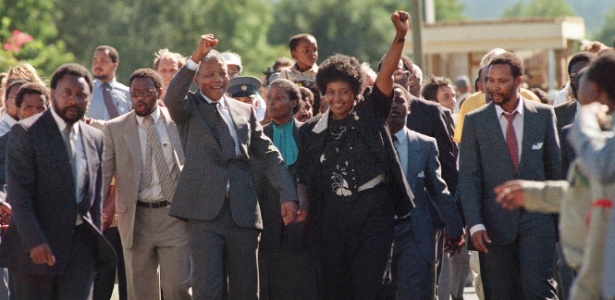

Nelson Mandela
Líder sul-africano que lutou contra o regime racista.

Nelson Mandela em liberdade após 27 anos presso.
Aqui está uma linha do tempo da vida de Nelson Mandela:
- 1918 - Nasce em Qunu
- 1925 - Esscola primária, morte do pai
- 1939 - Ingressa na faculdade de Fort Hare
- 1940 - Expulso de Fort Hare
- 1943 (até 1948) - Estuda Direito em Witwaters rand
- 1944 - Ingressa no CNA e casa-se com Evelyn
- 1945 - Nasce o primiero filho, Tembi
- 1947 - Nasce sua filha, que infelizmente vem a falecer; se torna secretário geral da ANCYL
- 1948 - Implantação do apartheid
- 1950 - Nasce Makgatho, segundo filho
- 1951 - Presidente da ANCYL
- 1952 - Campanha desafio; prisão
- 1954 - Nasce Makaziwe; forma-se a Aliança do Congresso
- 1955 - Carta da liberdade; separação de Evelyn
- 1956 - Prisão no julgamento por traição
- 1958 - Julgamento termina, casa-se com Winnie
- 1959 - Nasce Zerani
- 1962 - Viagem pela África; prisão ma Ilha Robben
- 1968 - Morte da mãe
- 1969 - Morte do filho Tembi
- 1972 - Tentam assassiná-lo na prisão
- 1990 - Libertação
- 1993 - Separação de Winnie e ganha o Nobel da Paz
- 1994 -1999 - Presidência da África do Sul
- 1998 - Casa-se com Graça Machel
- 2001 - Câncer da próstata
- 2005 - Morre o filho Makgatho(AIDS)
- 2010 - Copa do Mundo de futebol na África do Sul; morte da bisneta.
- 2012 - Começo da infecção pulmonar
- 2013 - (5 de dezembro) Morre em Joanes Burgo com 95 anos de idade.